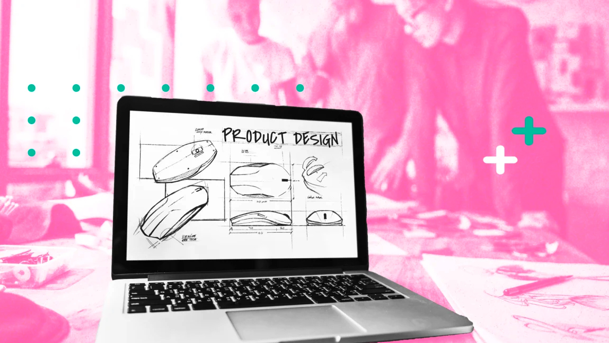
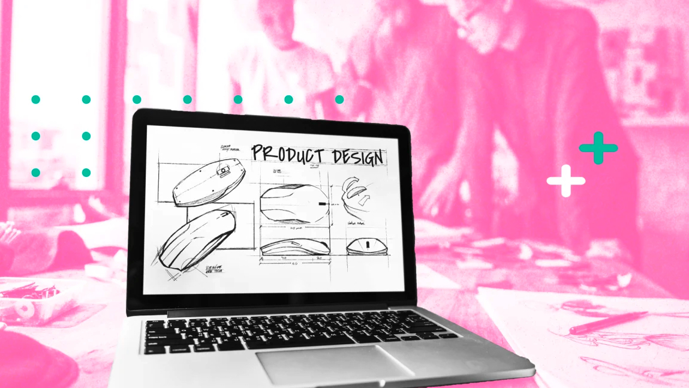

April 11, 2022
Women in crypto will solve more than just a diversity problem
Hiring women into leadership positions will do more than just diversify this arm of the finance industry; they’ll impact sustainability and ESG issues for the better.

April 15, 2022

Wall Street has long been dominated by men. Though the percentage of men and women entering the field is roughly equal, finance is still largely a male-dominated industry with men typically rising to the top faster than women. As digital currencies take root, crypto companies have an opportunity to be far more inclusive—but they better start now.
The data doesn’t lie: Crypto companies are already experiencing a diversity problem. According to The Street, less than 5% of crypto founders are women. And the same goes for those investing in digital currencies. Bitcoin was initially built around encouraging financial equity, but 75% of crypto holders are men, as mentioned in a 2021 State of U.S. Crypto report. Even more interesting is that crypto has seemingly broken down race barriers where other industries have not. Data from CNBC reported that people of all races are about equally likely to own cryptocurrency. Yet cryptocurrency hasn’t managed to break down gender disparities, with men twice as likely to invest in crypto as women.
There’s no doubt that as an industry, crypto could benefit from more women in leadership positions. Research reported in the Harvard Business Review places women ahead of men in resilience, self-development, and initiative-taking. It would be wise to hire more women into leadership positions in crypto not only for diversity of thought but also to help attract a wider pool of investors.
If we don’t diversify the voices in the crypto conversation, we’ll see a repeat of the inequality that exists in traditional finance. That starts with education efforts directed at women. Companies must get women talking about crypto as part of their financial future. And what better way to get women talking than seeing a woman leading the path in an executive role?
Environmental, social, and governance (ESG) investing is on the rise—especially among women. Investors are more aware than ever of these non-financial factors, and they take them into consideration when identifying the risk and opportunities of investments. A recent study by RBC Wealth Management found that women are more than twice as likely as men to say it’s extremely important that the companies they invest in incorporate ESG factors into their policies and procedures.
It’s no secret that cryptocurrency comes with a significant environmental impact. As noted by Nasdaq, the processing power required to mine the cryptocurrency and complete transactions in it is huge: a single Bitcoin block may consume more than 2,000 kilowatt-hours of electricity to be mined, which equals the amount of power consumed by the average American household over 72.2 days.
As sustainable investing continues to grow, women will take the lead as investors, crypto decision-makers, and executives, lending an ESG lens to strategies for pushing the industry forward, rethinking solutions to environmental concerns, and setting businesses up for future sustainability initiatives.
Join the community